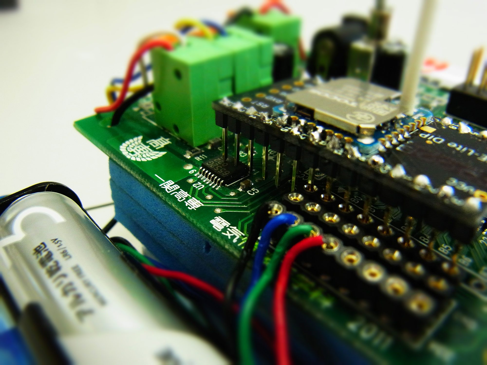
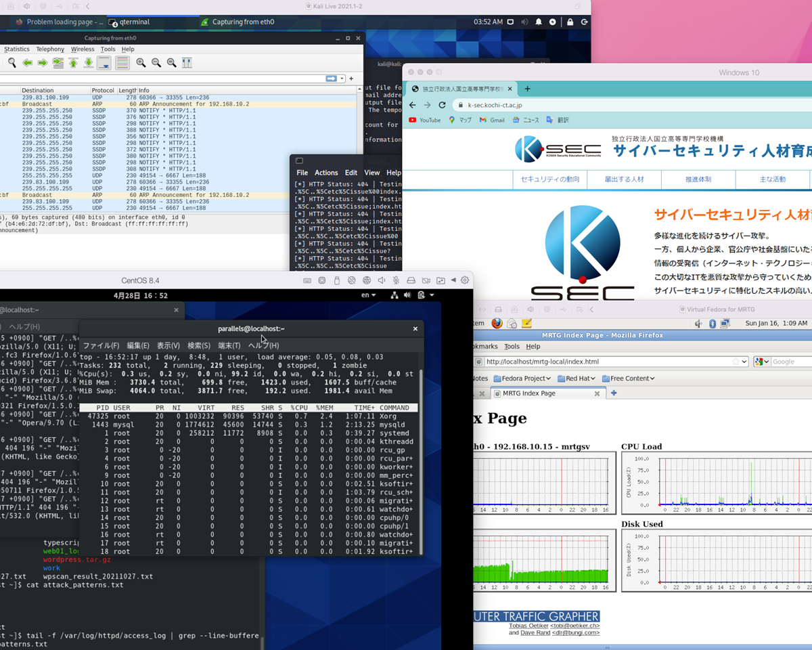
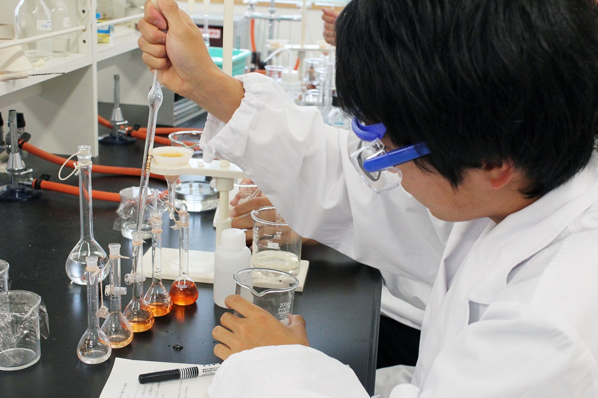

Index
目次

1年生の授業
入学時は未来創造工学科で入学し、全学生共通の内容を勉強します。一年間、基礎となる授業や実験実習を一通り学ぶことで、自分に合った専門課程を考えていき、2年進級時に4系から希望する系を1つ選んで進級します。ここでは、主に数学や化学に関する科目や実習科目について紹介しています。
機械・知能系
機械をつくるための設計技術、材料の知識、加工方法、熱や流れの知識、制御理論、計測手法といった機械系分野を幅広く学びます。さらに、次世代ロボット、EV等の次世代自動車、水力・風力・地熱等の 再生可能エネルギー利用など、未来を見据えた応用的な分野でも活躍できる次世代の機械系技術者を養成します。

電気・電子系
電気工学および電子工学にかかわる電気と磁気に関する物理現象、電気・電子回路、モーターなどの電気機器、材料、エネルギーなどの電気・電子系分野の技術を学びます。さらに、発送電などの電力分野や、電子機器・自動車の制御などの応用的な分野でも活躍できる次世代の電気系技術者を養成します。

情報・ソフトウェア系
情報工学にかかわるプログラミング、アプリ開発、ネットワークシステム、コンピュータグラフィックス、IoT、サイバーセキュリティなどの情報・ソフトウェア系分野の技術を学びます。さらに、ロボティクス (人工知能)やスマートカー(自動運転)などの 応用的な分野でも活躍できる次世代の情報系技術者を養成します。

化学・バイオ系
化学製品を効率的に生産するための「化学工学」と、微生物や酵素を利用するための「生物工学」にかかわる化学・バイオ系分野の技術を学びます。さらに、生活を豊かにする化学製品(プラスチック、医薬品、食品、新素材など)の製造や環境・エネルギー問題を解決できる技術を身に付け、応用的な分野でも活躍できる次世代の化学系技術者を養成します。